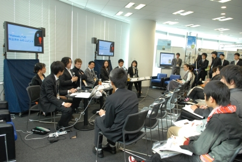

ORF2010 開催概要
|
ORF開催結果報告
2010年11月22日〜23日、六本木アカデミーヒルズ40において、本取組「ユビキタス社会の問題発見解決型人材育成—知識・技能の実践的活用環境の構築と知的コミュニケーション能力を有する人材育成—」の成果発表を行いました。
- 実施したイベントの成果
- 今後の事業への反映
- 来場者数
本取組の３年間の成果を広く普及させるため、「インタラクティブセッション： ＩＣＴは大学教育に変革をもたらすのか？」、および、「パネル・セッション： 「毎日を教科書にしたい!」 -学習者がデザインする学習環境-」を開催し、本取組における教育・研究成果の発表、および、外部パネル・ゲストを交えたディスカッションを行いました。これらのセッションにより、本取組の研究・教育成果に関する産学連携の可能性を図るとともに、広く一般の方々からの理解を深めることができました。また、新たな知識・技能をいつでもどこでも実践的に活用できる「ユビキタス体験教育環境」、および、遠隔地間で共通の教材をサイバースペース上の中心に配置し、双方の操作・会話を対話的かつ直接的に参照、共有、操作、創作するコラボレーション型教育環境システムの実働システムのデモンストレーションを行いました。また、徳田・高汐・中澤研究会、清木研究会、藁谷・ラインデル研究会、倉林研究会のブースにおいて、本取組における教育・研究成果の発表を行いました。この発表により、参加者の本取組「ユビキタス社会の問題発見解決型人材育成—知識・技能の実践的活用環境の構築と知的コミュニケーション能力を有する人材育成—」に関する、広く一般の方々からの理解を深めることができました。
「ユビキタス体験教育環境」に対して参加者から「外国語学習だけでなく、環境分野、公共交通分野のような、実空間を中心とした教育分野に適用できるのではないか」といたご意見を頂戴したため、これを踏まえ本プログラムを、外国語学習だけでなく、環境分野における実空間へ適用可能とするよう改善を検討しました。
両日合計3042人（内訳：企業関係1145人、大学関係1067人、その他830人）
インタラクティブセッション： ＩＣＴは大学教育に変革をもたらすのか？
ユビキタス社会の問題発見解決型人材育成プロジェクトは、グローバル社会における問題発見解決型人材育成のための教育の質的向上を目的としています。本セッションでは、SFCにおける外国語教育へのICT活用事例として、その時その場に応じた教材配信を実現するユビキタス体験連動型教育環境、海外大学との共同授業を実現する遠隔コラボレーション教育環境を紹介し、ＩＣＴが大学教育にもたらす変革について議論しました。
パネル・ゲスト： 東京大学 坂村 健 教授、筑波大学 北川 高嗣 教授、南山大学 太田 達也 准教授、環境情報学部 徳田 英幸 教授、環境情報学部 清木 康 教授、総合政策学部 藁谷 郁美 准教授
ＩＣＴが大学教育にもたらす変革について議論 | SFCにおける外国語教育へのICT活用事例を紹介 |
北川 高嗣 教授、太田 達也 准教授、坂村 健 教授 |  藁谷 郁美 准教授、徳田 英幸 教授、清木 康 教授 |
パネル・セッション： 「毎日を教科書にしたい!」 -学習者がデザインする学習環境-
SFCの外国語研究会には、外国語学習の環境が生活環境と一体化される、まるで「毎日 が教科書になる」ようなIT教材を制作している研究会があります。それらのほとんどは、制作者自身の学習経験を反映しつつ、理論的に裏付けられたものとなっています。本セッションでは学習者が学習環境をデザインすることの意義と可能性について、具体的な教材を示し、学習者がデザインする学習環境についてのディスカッションを行いました。
- 司会：遠藤 忍さん（慶應義塾大学総合政策学部４年）
- 登壇者：石井 誠さん（ＳＦＣ研究所員、富士通株式会社、環境情報学部2010年卒）
教材名：Platzwit - 登壇者：米持 愛未さん（環境情報学部４年）
教材名：d-Theater
教材のＵＲＬ http://dmode.sfc.keio.ac.jp/d-theater/ - 登壇者：中山 みなみ さん（環境情報学部４年）
教材名：live-on-live
教材のＵＲＬ http://live-on-live.sfc.keio.ac.jp/
パネル・ゲスト： 南山大学外国語学部ドイツ学科 アンドレアス リスラント 准教授、南山大学外国語学部ドイツ学科 太田 達也 准教授、総合政策学部 藁谷 郁美 准教授、環境情報学部 倉林 修一 専任講師
遠藤 忍さん、米持愛未さん、石井誠さん、中山みなみさん |
 藁谷 郁美 准教授、倉林 修一 専任講師、 アンドレアス リスラント 准教授、太田 達也 准教授 |  学習者が学習環境をデザインすることの意義と可能性についてのディスカッションを来場者の方々と共に行いました |
デモンストレーション発表
|
図1．その時、その場でもっとも必要な教材を活用するユビキタス学習支援システムとして、生活空間における実践的体験学習環境を実現
| ドイツ語教材開発研究プロジェクト（d-mode）は、学部生、大学院生およびドイツ語研究室の専任教員 で構成されており、学習者にとってよりよいドイツ語学習環境を整えることを目的として活動 しています。特に IT(Web サイトやデータベースなど)およびマルチメディア(音声や画像、 動画など)を活用しながら、教員と学生が共同でさまざまな教材の開発を行なっています。 |
|
Video 1．Experience-Connected Ubiquitous Learning Environment |
その時、その場でもっとも必要な教材を活用するユビキタス学習支援システムとして、生活空間における実践的体験学習環境を実現しました。また、その実働システムとして、ドイツ語学習者の日常生活での各種の経験に応じて、学習者に、ドイツ語でその体験についてドイツ語で語る方法を音声、動画、例文で配信することが可能な、 “今”、“ここ”にいる状況での生きた経験と外国語学習を直接結び付けることができる学習環境を実現しました。本システムは、スマートフォン（iPhoneなど）のGPS機能を用いて利用者の現在位置を認識し、場所と時間、及び、利用者の属性情報に応じた教材配信を実現しています。 |
 図2．Cross-Cultural遠隔コラボレーション教育環境の実働システムの公開 | 海外の連携大学・研究機関（フィンランド・タンペレ工科大学、ユバスキュラ大学、タイ・国立計算技術センター）との間で、文化財画像および風土・自然を表す風景写真を対象としたCross-Culturalマルチメディア検索・分析システムを実現しました。さらに、その検索・分析結果のリアルタイムな共有・協働操作を可能とするCross-Cultural遠隔コラボレーション教育環境を構築しました。 |
取組の概要
本取組「ユビキタス社会の問題発見解決型人材育成ー知識・技能の実践的活用環境の構築と知的コミュニケーション能力を有する人材育成ー」は、グローバルなネットワーク社会、ユビキタス社会（場所、時間、環境、状況に応じて動的に情報が交信される社会）における問題発見解決型人材育成のための教育の質的向上を目的として、慶應義塾大学湘南藤沢キャンパス（SFC）環境情報学部を中心に、同学部と同じくSFC にあり“双子の学部”と称される総合政策学部と共に展開し、その成果を大学教育全体の質的向上への波及を目指すものです。
SFC は、1990 年の開設以来、問題発見解決型の教育・研究を実践し、2007 年度にはこれまでの経験を反映し、改革した未来創造カリキュラムを導入、実施しています。本取組は、これらの流れを加速し、グローバル・ネットワーク社会、ユビキタス社会において求められる問題発見解決型人材育成のための教育の質的向上を実現し、共通する諸課題の発見や解決を実践できる知的コミュニケーション、コラボレーション能力をもつ人材を育成します。さらに、グローバル・ネットワーク環境およびユビキタス技術を活用し、新たな知識・技能をいつでもどこでも実践的に活用できるユビキタス体験教育環境やネットワーク上での新しい遠隔コラボレーション教育環境を構築し、実践的に活用していきます。
本キャンパスで実践されている教育研究活動は、教員・職員・学生間での協働作業およびそれぞれの活動を支援する教育研究環境によって支えられています。この教育研究環境をベースに下記4件の取組を通じ、新しい高度コミュニケーション・コラボレーション能力を有する人材育成環境を国内外の教育研究機関との間に構築し、その質の高い教育環境を社会へ広く展開していきます。
1.リアルタイム教育研究環境支援システム「SFC Analytics」の構築
教育研究環境支援システム「SFC-SFS（Site For Communication among Students, Faculty andStaff：特許出願中）」のリアルタイム性を拡張した「SFC Analytics」を構築。リアルタイムでのシラバス公開、授業調査、授業配信、課題提出、履修者管理などを実施し、教員・職員・学生間の講義内容の共有と対話的なリアルタイム情報収集・交換を行います。
2.即時的な教育効果評価・改善のためのFaculty Development（FD）としての「SFC アゴラモデル」を確立
異分野の教員間の討論の場としてキャンパス開設以来続けてきた「アゴラ」制度を拡張し、「教育・研究アゴラ」と「評価・点検アゴラ」を設置、開催することで、学期進行中における授業改善を行います。
3.新たな知識・技能をいつでもどこでも実践的に活用できる「ユビキタス体験教育環境」を構築
学生が講義で得られた知識・技能を実生活空間で実際に活用・追体験できるような“生活空間における実践的体験学習”環境を実現します。
4.ネットワーク上での新しい遠隔コラボレーション教育環境を実現
遠隔地間で共通の教材をサイバースペース上の中心に配置し、双方の操作・会話を対話的かつ直接的に参照、共有、操作、創作するコラボレーション型教育環境システムを構築します。
- 採択プログラム：
- 文部科学省2008年度「質の高い大学教育推進プログラム」（教育GP）
- 取組学部
- 環境情報学部
- 【関連サイト】
-
→文部科学省：平成20年度『質の高い大学教育推進プログラム』の選定状況について
→日本学術振興会：質の高い大学教育推進プログラム
→ORF2009における「ユビキタス社会の問題発見解決型人材育成」発表：ユビキタス社会の問題発見解決型人材育成 in SFC Open Research Forum 2009